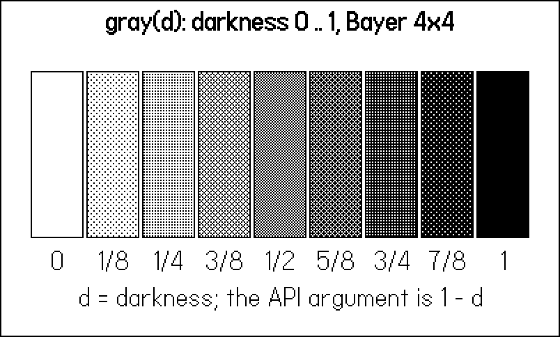
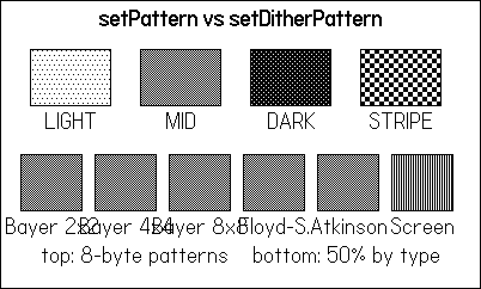
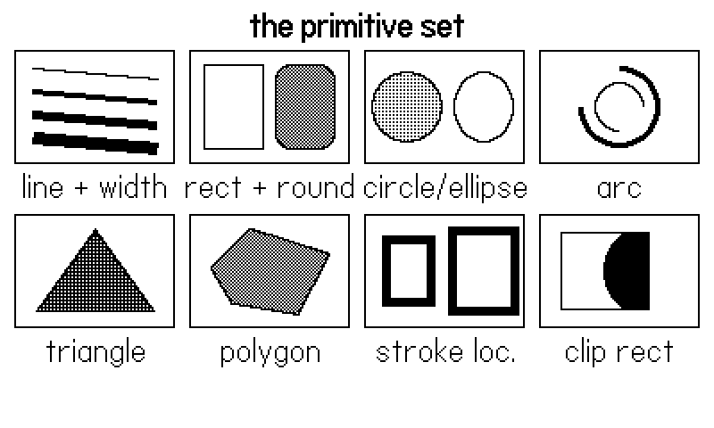
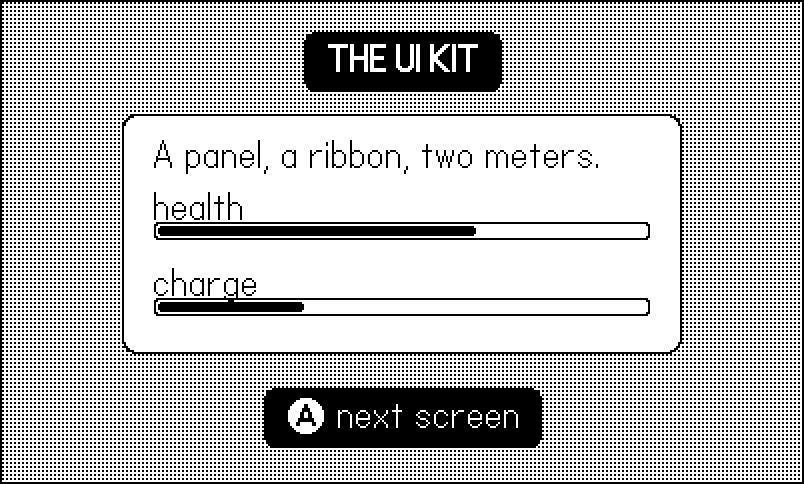

4 Drawing in One Bit
The Playdate’s screen has exactly two states per pixel: black and white. There is no alpha channel, no gray, no palette to fall back on. Everything that reads as shading on this hardware — water, shadows, clouds, the soft field behind a menu — is an arrangement of black and white pixels doing an impression of gray. This chapter is about making that impression convincing, and about the drawing primitives you build it from.
The chapter’s example, 04-dither, is four screens you will keep returning to for the rest of the book: a dither ladder that doubles as the book’s gray reference chart, a pattern gallery, a tour of every drawing primitive, and a small UI kit — panel, ribbon, meter — assembled from nothing but those primitives. All of it is drawn immediate-mode, every frame, which is how nearly all of the case-study games render (Chapter 6 explains the alternative). Along the way you will meet the single most damaging trap in the whole graphics API — setDitherPattern’s argument means the opposite of what everyone assumes — and the discipline that keeps drawing state from leaking between modules.
4.1 Three colors, one of them strange
Every fill and stroke uses the current color, set with playdate.graphics.setColor. There are three useful values:
gfx.kColorBlackandgfx.kColorWhiteare what they say.gfx.kColorXORinverts whatever it draws over: black pixels become white and vice versa. It is the classic trick for a cursor or selection box that stays visible on any background — no need to know what is underneath.
(There is also kColorClear, which punches transparent holes when you are drawing into an image rather than the screen; Chapter 5 covers drawing into images.)
The example wraps the two common ones in one-line helpers, because you will type them hundreds of times:
local DTH <const> = gfx.image.kDitherTypeBayer4x4
local function blk() gfx.setColor(gfx.kColorBlack) end
local function wht() gfx.setColor(gfx.kColorWhite) end
-- d is DARKNESS (0 white .. 1 black). setDitherPattern's argument
-- is transparency (low value = darker), so invert d to get the
-- intuitive scale.
local function gray(d)
gfx.setDitherPattern(1 - d, DTH)
endThat third helper, gray, is the heart of the chapter, and it exists because of a trap. Read on.
4.2 The dither ladder, and THE trap
gfx.setDitherPattern(alpha, [ditherType]) sets the current color to a screened mix of black and white — the 1-bit answer to “50% gray”. Subsequent fills use it exactly like a color. Here is the trap, and it has bitten every project that touched the API:
setDitherPattern’s argument is transparency, not darkness
setDitherPattern(0.8) does not give you a dark fill. The parameter is alpha in the transparency sense: 0 is fully opaque black, 1 is fully transparent (nothing drawn at all). Low values are dark, high values are light — the reverse of the mental model almost everyone brings, where a bigger number means more ink.
The fix is to never call it directly. Wrap it once, inverted, and think in darkness forever after.
This is not a hypothetical. Blood and Whine’s renderer — a fully procedural 1-bit art pipeline, no bitmap assets at all — carries this exact comment at the top of its draw module, written after an entire art pass came out inverted:
-- whine/source/draw.lua:14
-- d is DARKNESS (0 white .. 1 black). setDitherPattern's arg is
-- transparency (low value = darker), so invert d to get the
-- intuitive scale.
local function gray(d) gfx.setDitherPattern(1 - d, DTH) endOur gray(d) is the same helper. With it, the example’s first screen draws the reference chart in a dozen lines:
local LABELS <const> = {
"0", "1/8", "1/4", "3/8", "1/2", "5/8", "3/4", "7/8", "1",
}
function Draw.ladder()
title("gray(d): darkness 0 .. 1, Bayer 4x4")
local w, h, y = 38, 120, 50
for i = 0, 8 do
local x = 21 + i * 40
gray(i / 8)
gfx.fillRect(x, y, w, h)
blk()
gfx.drawRect(x, y, w, h)
label(LABELS[i + 1], x + w / 2, y + h + 8)
end
label("d = darkness; the API argument is 1 - d", 200, 204)
end
gray(d) for d from 0 to 1 in eighths, Bayer 4×4. Bookmark this figure — it is the book’s gray swatch chart.
Figure 4.1 is worth keeping a thumb on. When a later chapter says “a 0.25 field” or “0.6 ground”, this is what those numbers look like. Two practical observations from shipping games with these swatches:
- The middle of the ladder is where texture lives. 1/2 is the classic checkerboard; 3/8 and 5/8 read as distinct materials at arm’s length. The extremes (1/8, 7/8) read as “slightly dirty white/black” and are best for subtle depth cues.
- Mid-gray fields make the best backdrops. The case-study games settled on a palette rule: mid-gray fields, white player, dark enemies. Pure white fields waste the player’s own brightness; pure black swallows enemies.
4.3 Patterns: rolling your own gray
setDitherPattern is actually a convenience over a lower-level tool: gfx.setPattern(pattern) takes a table of eight bytes, one per row of a repeating 8×8 tile, with each set bit drawn white. It overrides the current color until the next setColor call. When you want a directional texture — brick courses, rain streaks, scanlines — no dither type will give it to you, and eight bytes will:
-- an 8-byte pattern is 8 rows of 8 pixels; bit set = white
local PAT <const> = {
LIGHT = { 0xFF, 0xDD, 0xFF, 0xFF, 0xFF, 0x77, 0xFF, 0xFF },
MID = { 0xAA, 0x55, 0xAA, 0x55, 0xAA, 0x55, 0xAA, 0x55 },
DARK = { 0x11, 0x00, 0x44, 0x00, 0x11, 0x00, 0x44, 0x00 },
STRIPE = { 0x0F, 0x0F, 0x0F, 0x0F, 0xF0, 0xF0, 0xF0, 0xF0 },
}
local TYPES <const> = {
{ "Bayer 2x2", gfx.image.kDitherTypeBayer2x2 },
{ "Bayer 4x4", gfx.image.kDitherTypeBayer4x4 },
{ "Bayer 8x8", gfx.image.kDitherTypeBayer8x8 },
{ "Floyd-S.", gfx.image.kDitherTypeFloydSteinberg },
{ "Atkinson", gfx.image.kDitherTypeAtkinson },
{ "Screen", gfx.image.kDitherTypeScreen },
}
function Draw.patterns()
title("setPattern vs setDitherPattern")
local names = { "LIGHT", "MID", "DARK", "STRIPE" }
for i, name in ipairs(names) do
local x = 24 + (i - 1) * 92
gfx.setPattern(PAT[name])
gfx.fillRect(x, 40, 68, 48)
blk()
gfx.drawRect(x, 40, 68, 48)
label(name, x + 34, 92)
end
for i, t in ipairs(TYPES) do
local x = 16 + (i - 1) * 62
gfx.setDitherPattern(0.5, t[2])
gfx.fillRect(x, 128, 52, 48)
blk()
gfx.drawRect(x, 128, 52, 48)
label(t[1], x + 26, 180)
end
label("top: 8-byte patterns bottom: 50% by type", 200, 204)
end
setPattern fills. Bottom row: the same 50% darkness rendered by six different dither types.
The bottom row of Figure 4.2 compares dither types, the optional second argument to setDitherPattern:
- Bayer 2×2 / 4×4 / 8×8 (
kDitherTypeBayer*) are ordered dithers: stable, perfectly repeating grids. Bigger matrices give more distinct gray levels at the cost of a coarser texture. These are the workhorses — everything static in the case-study games uses Bayer. - Floyd–Steinberg, Burkes, Atkinson (
kDitherTypeFloydSteinberg, …) are error-diffusion — “noise” — dithers. They look organic and avoid the grid, but the pattern depends on where the fill starts, so a moving shape filled with them shimmers frame to frame. Use them for freeze-frame texture (title cards, photos), not for anything that moves. - Screen and line dithers (
kDitherTypeScreen,kDitherTypeDiagonalLine,kDitherTypeVerticalLine,kDitherTypeHorizontalLine) are stylized halftones — good for deliberate print-look effects.
The shared tile engine behind the Tiles games defines its whole terrain palette as five named patterns (tiles/core/tmap.lua:19): WHITE, LIGHT, MID (0xAA,0x55 alternating — the checkerboard), DARK, BLACK. Five rows of texture were enough for four shipped games. Design your patterns in a comment as ASCII art first; each byte is one row of that art read as binary.
4.4 The primitive set
Everything the Playdate draws ultimately comes from a short list of primitives. The example’s third screen draws each one in a labelled cell:
local function cell(i, name, fn)
local col, row = (i - 1) % 4, (i - 1) // 4
local x, y = 8 + col * 98, 28 + row * 92
gfx.setClipRect(x, y, 90, 64) -- demos cannot leak out
fn(x, y)
gfx.clearClipRect()
blk()
gfx.setLineWidth(1)
gfx.drawRect(x, y, 90, 64)
label(name, x + 45, y + 68)
end
function Draw.primitives()
title("the primitive set")
cell(1, "line + width", function(x, y)
blk()
for i = 0, 3 do
gfx.setLineWidth(1 + i * 2)
gfx.drawLine(x + 10, y + 10 + i * 13,
x + 80, y + 16 + i * 13)
end
gfx.setLineWidth(1)
end)
cell(2, "rect + round", function(x, y)
blk()
gfx.drawRect(x + 8, y + 8, 34, 48)
gray(0.5)
gfx.fillRoundRect(x + 48, y + 8, 34, 48, 8)
blk()
gfx.drawRoundRect(x + 48, y + 8, 34, 48, 8)
end)
cell(3, "circle/ellipse", function(x, y)
gray(0.25)
gfx.fillCircleAtPoint(x + 24, y + 32, 20)
blk()
gfx.drawCircleAtPoint(x + 24, y + 32, 20)
gfx.drawEllipseInRect(x + 50, y + 12, 34, 40)
end)
cell(4, "arc", function(x, y)
blk()
gfx.setLineWidth(3)
-- degrees, clockwise, 0 = twelve o'clock
gfx.drawArc(x + 45, y + 32, 22, 0, 270)
gfx.setLineWidth(1)
gfx.drawArc(x + 45, y + 32, 14, 180, 90)
end)
cell(5, "triangle", function(x, y)
gray(0.75)
gfx.fillTriangle(x + 12, y + 54, x + 45, y + 8,
x + 78, y + 54)
blk()
gfx.drawTriangle(x + 12, y + 54, x + 45, y + 8,
x + 78, y + 54)
end)
cell(6, "polygon", function(x, y)
gray(0.5)
gfx.fillPolygon(x + 12, y + 30, x + 34, y + 8,
x + 78, y + 22, x + 60, y + 56, x + 24, y + 50)
blk()
gfx.drawPolygon(x + 12, y + 30, x + 34, y + 8,
x + 78, y + 22, x + 60, y + 56, x + 24, y + 50)
end)
cell(7, "stroke loc.", function(x, y)
blk()
gfx.setLineWidth(5)
gfx.setStrokeLocation(gfx.kStrokeInside)
gfx.drawRect(x + 10, y + 12, 30, 40)
gfx.setStrokeLocation(gfx.kStrokeOutside)
gfx.drawRect(x + 52, y + 12, 30, 40)
gfx.setStrokeLocation(gfx.kStrokeCentered)
gfx.setLineWidth(1)
end)
cell(8, "clip rect", function(x, y)
gfx.setClipRect(x + 12, y + 10, 50, 44)
blk()
gfx.fillCircleAtPoint(x + 62, y + 32, 26)
gfx.clearClipRect()
blk()
gfx.drawRect(x + 12, y + 10, 50, 44)
end)
end
A tour of the API names, with the details that matter:
gfx.drawLine(x1, y1, x2, y2)— respectssetLineWidth(w). Line width applies to strokes everywhere (rect outlines, arcs, polylines), not to fills.gfx.drawRect(x, y, w, h)/fillRect— the bread and butter.drawRoundRect(x, y, w, h, radius)/fillRoundRectadd the corner radius; virtually every panel and meter in the case-study games is a round rect.gfx.drawCircleAtPoint(x, y, r)/fillCircleAtPoint, plusdrawCircleInRectwhen you’d rather specify the bounding box.drawEllipseInRect(x, y, w, h)/fillEllipseInRectare rect-specified only.gfx.drawArc(x, y, radius, startAngle, endAngle)— angles are in degrees, clockwise, with 0 at twelve o’clock, matching the crank’s coordinate system rather than math class. An arc from 0 to 270 sweeps right and around through the bottom.gfx.drawTriangle/fillTriangletake six coordinates;drawPolygon/fillPolygontake any even number (or ageometry.polygon). For self-intersecting polygons,setPolygonFillRule(gfx.kPolygonFillEvenOdd)chooses which regions count as inside.gfx.drawPixel(x, y)— for when nothing smaller will do; the string-art tile renderer intiles/core/tmap.luabuilds whole tilesets from it.
Two modifiers deserve their own paragraphs.
Stroke location. gfx.setStrokeLocation(loc) controls where a thick outline sits relative to the shape’s edge: gfx.kStrokeCentered (default), kStrokeInside, kStrokeOutside. With 1-pixel lines it is invisible; with a 5-pixel border it decides whether your outline eats the panel’s interior or grows the panel. The “stroke loc.” cell in Figure 4.3 shows the same rect drawn inside- and outside-stroked. It only affects drawRect and friends — drawLine has no inside.
Clipping. gfx.setClipRect(x, y, w, h) confines all drawing to a rectangle until gfx.clearClipRect(). The clip demo cell draws a circle deliberately hanging over the cell edge; the clip rect amputates it cleanly. Clipping is how you build viewports, reveal effects, and meters that fill by clipping a full-width texture. Note the example’s cell() helper wraps every demo in a clip rect — defensive drawing, so no demo can scribble on its neighbours. (setScreenClipRect is the variant that ignores the draw offset; that distinction matters once cameras enter in Chapter 7.)
4.5 Text, and white-on-black knockout
gfx.drawText(str, x, y) draws in the system font (bold between *asterisks*, italic between _underscores_); gfx.drawTextAligned(str, x, y, kTextAlignment.center) handles centering, and gfx.getTextSize(str) measures. But text has a catch: glyphs are images, not fills, so setColor does not affect text. Text draws black, always — until you change the image draw mode:
gfx.setImageDrawMode(gfx.kDrawModeFillWhite)
gfx.drawTextAligned(text, 200, y, kTextAlignment.center)
gfx.setImageDrawMode(gfx.kDrawModeCopy)kDrawModeFillWhite re-inks every opaque pixel white — the knockout headline on a black ribbon. The full catalog of draw modes applies to all images and is covered in Chapter 5; for now, FillWhite-then-back-to-Copy is the pattern to memorize, including the reset. Forget the third line and every subsequent text and image in your frame silently draws white.
The example’s fourth screen assembles the pieces into the UI kit that, in one form or another, ships in every case-study game:
local function panel(x, y, w, h)
wht(); gfx.fillRoundRect(x, y, w, h, 6)
blk(); gfx.drawRoundRect(x, y, w, h, 6)
end
-- black rounded bar with knocked-out white text
local function ribbon(text, cy)
local tw, th = gfx.getTextSize(text)
local pad = 12
blk()
gfx.fillRoundRect(200 - tw / 2 - pad, cy - th / 2 - 5,
tw + pad * 2, th + 10, 5)
gfx.setImageDrawMode(gfx.kDrawModeFillWhite)
gfx.drawTextAligned(text, 200, cy - th / 2,
kTextAlignment.center)
gfx.setImageDrawMode(gfx.kDrawModeCopy)
end
local function meter(x, y, w, frac, lab)
if lab then blk(); gfx.drawText(lab, x, y - 16) end
blk(); gfx.drawRoundRect(x, y, w, 9, 2)
local fw = math.max(0, (w - 4) * math.min(frac, 1))
if fw > 0 then gfx.fillRoundRect(x + 2, y + 2, fw, 5, 1) end
end
function Draw.uikit()
gray(0.25) -- a field behind the UI
gfx.fillRect(0, 0, 400, 240)
ribbon("*THE UI KIT*", 30)
panel(60, 56, 280, 120)
blk()
gfx.drawText("A panel, a ribbon, two meters.", 76, 68)
meter(76, 110, 248, 0.65, "health")
meter(76, 148, 248, 0.30, "charge")
ribbon("Ⓐ next screen", 208)
end
This trio is lifted almost verbatim from Blood and Whine (whine/source/draw.lua:22-42), where it dresses every screen in the game. Note the composition rules at work in Figure 4.4: the panel is white so it pops off the gray field; the ribbon is black so the white knockout text pops off it; the meter is an outline with a 2-pixel inset fill so it stays readable at 9 pixels tall.
4.6 Draw-mode reset discipline
Color, pattern, dither, line width, stroke location, clip rect, draw mode, draw offset — all of it is global state on one shared context. The screen does not belong to any one module, so a module that changes state and returns without restoring it has just sabotaged whoever draws next. The bug is maddening because the culprit looks correct and the victim looks broken.
The fighting game Fightin’ Chitin draws each arena backdrop through a per-stage callback — dozens of them, written at different times, any of which might leave a dither or a fat line width behind. Its stage dispatcher doesn’t trust them; it resets on the way out, every frame:
-- chitin/source/stage.lua:273
function Stage.draw()
T = T + 1
gfx.setImageDrawMode(gfx.kDrawModeCopy)
Stage.def(Stage.current).draw()
gfx.setColor(gfx.kColorBlack)
gfx.setLineWidth(1)
gfx.setDitherPattern(0) -- reset dither so callers draw solid
endThe example does the same at the end of its update:
-- Reset shared state before handing the frame back: the next
-- caller expects solid black, hairlines, copy mode.
function Draw.reset()
gfx.setColor(gfx.kColorBlack)
gfx.setLineWidth(1)
gfx.setStrokeLocation(gfx.kStrokeCentered)
gfx.setImageDrawMode(gfx.kDrawModeCopy)
gfx.clearClipRect()
endTwo workable conventions: every function restores what it changes (fine-grained, easy to forget), or the module boundary resets everything (blunt, impossible to forget). The shipped games converged on the second — a reset() at the end of the frame or after any callback dispatch. A handful of redundant state calls per frame cost nothing; an evening lost to “why is the HUD suddenly dithered” costs an evening. Note the chitin quote resets dither with setDitherPattern(0) — alpha 0, fully opaque — followed by setColor(black); either alone would do, since setColor clears any pattern, but the pairing documents intent.
Finally, the screen dispatch that stitches the example together — the same bot-first input seam introduced in Chapter 1, so the figure script can page through the screens:
function playdate.update()
local bot = Harness.input(frame)
if bot and bot.screen then
screen = bot.screen
elseif playdate.buttonJustPressed(playdate.kButtonA) then
screen = screen % SCREENS + 1
end
gfx.clear(gfx.kColorWhite)
if screen == 1 then Draw.ladder()
elseif screen == 2 then Draw.patterns()
elseif screen == 3 then Draw.primitives()
else Draw.uikit() end
Draw.reset()
end4.7 What you know now
- The three colors — black, white, and XOR for always-visible-cursor tricks — and that
setPattern’s eight bytes override color until the nextsetColor. setDitherPattern’s argument is transparency, not darkness; wrap it asgray(d) = setDitherPattern(1 - d, …)once and never call it raw again.- The dither ladder (Figure 4.1) as a working gray palette; Bayer for anything that moves, error-diffusion “noise” dithers only for stills.
- The full primitive set — line, rect, roundRect, circle, ellipse, arc, triangle, polygon — plus
setLineWidth,setStrokeLocation, andsetClipRectas the modifiers that change how all of them land. - Text ignores
setColor; knockout headlines arekDrawModeFillWhiteplus a disciplined reset tokDrawModeCopy. - Drawing state is global: reset color, width, dither, clip, and draw mode at module boundaries, every frame.
- All of this is a floor, not a ceiling: Chapter 24 promotes it to an engine — ramps as objects, stencil-gated lights, and dither as lighting rather than texture.
Next, Chapter 5 moves from drawing on the screen to drawing into images — loading them, generating them in code at boot, animating them from imagetables, and stamping them scaled and rotated.